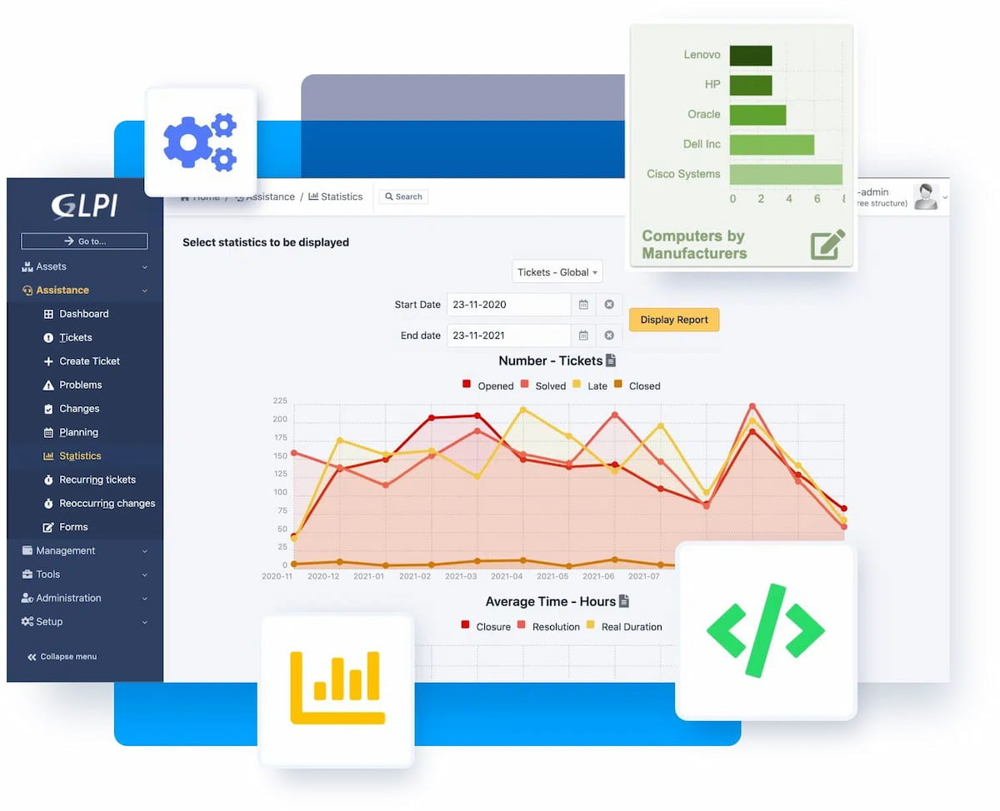
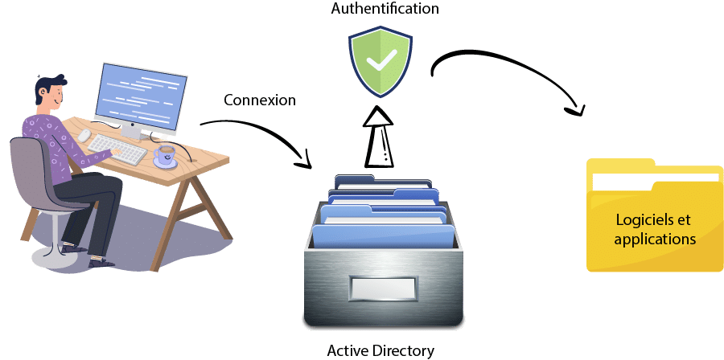

GUETTOUCHE BASMA
| Notion | Définition | Image |
|---|---|---|
| Proxy | Il permet d'empêcher les cybercriminels d'entrer dans un réseau privé. C'est un serveur dit « intermédiaire », car il se retrouve entre les utilisateurs finaux et les pages web qu'ils visitent en ligne. Lorsqu'un ordinateur se connecte à Internet, il utilise une adresse IP. | |
| GLPI | Logiciel libre de gestion des services informatiques (ITSM) et de gestion des services d'assistance (issue tracking system et ServiceDesk). |  |
| Active Directory | Centrer l'authentification et l'accès à un réseau de ressources. Les administrateurs réalisent la configuration des autorisations selon les paramètres choisis, permettant ainsi aux utilisateurs d'accéder aux éléments dont ils ont besoin pour leur activité. |  |